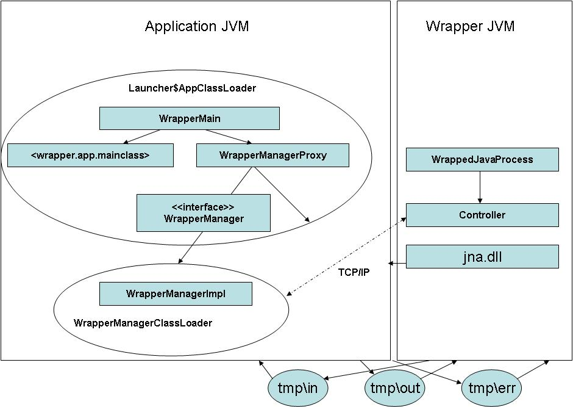

WrappedJavaProcess first starts a Controller which is waiting for the
application to connect to it's server port.
Then the application java process is started using jna.
The
java process executes WrapperMain.main() within the application's class
loader. This main method first creates the WrapperManagerProxy, which
loads the WrapperManagerImpl singleton within a separate class loader.
We can thus ensure that the application will not be "influenced" by any
classes loaded within the WrapperMangerImpl.
Once initialiazed
the WrapperManagerImpl pipes the java input output and error streams to
temporary circular buffer files and then connects to the
Controller server port, thus indicating to the wrapper that the child
process has successfully been spawned. The temprorary files are
read/written by the WrappedJavaProcess class. We can thus read and
write to the application streams from within the wrapper process.
Then the main() method of the application is called.
The
application can access the WrapperManager for example to request a
shutdown of the process by calling WrapperMain.WRAPPER_MANAGER.stop().